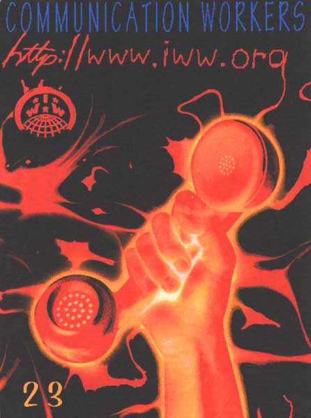

Submitted on Fri, 12/16/2005 - 5:56am
 Disclaimer: Eric Lee's article is reposted here not as an endorsement for iww.org as Labourstart Website of the Year--although iww.org is a candidate, and is mentioned in the article. It is posted here to emphasize the growing impact that the Internet, labor websites, and labourstart.org have on organized labor. The Internet--while currently dominated by capitalist interests nevertheless hold enormous potential for those of us fettered by capitalism (at least 99% of humanity) to emancipate ourselves from its yoke.
Disclaimer: Eric Lee's article is reposted here not as an endorsement for iww.org as Labourstart Website of the Year--although iww.org is a candidate, and is mentioned in the article. It is posted here to emphasize the growing impact that the Internet, labor websites, and labourstart.org have on organized labor. The Internet--while currently dominated by capitalist interests nevertheless hold enormous potential for those of us fettered by capitalism (at least 99% of humanity) to emancipate ourselves from its yoke.
For the ninth year in a row, LabourStart is once again organizing the Labour Website of the Year competition.
Submitted on Fri, 11/18/2005 - 3:06pm
LabourStart TV has been a huge success.
Since our launch early this week, thousands of trade unionists from all over the world have visited the site and viewed some of the videos we are linking to.
And we couldn't have picked a better week to launch. This week saw what was probably the largest mass protests in Australian history, with over 500,000 union members taking to the streets.
Within hours, we were linking to short videos taken from mainstream and trade union sources, documenting this extraordinary day of action. In the end, we had no fewer than 16 videos about the Australian events. You can see them all here:
http://www.labourstart.tv
This is great -- but is not enough. We need to move on to the next stage.
In order for LabourStart TV to have the impact we'd like it to have, people have to know about the site. Now, the traditional approach is to ask people to publicize our site. You know, tell your friends, pass this email on, and so on. That's fine as far as it goes. But we want to go further. Much further.
Imagine if you're a union member somewhere in the world, and you've got Internet access but you've never heard of LabourStart or LabourStart.tv.
And imagine that a day like November 15th comes along, with its hundreds of thousands of Australian union members staging an epic protest.
Wouldn't it be great if your own union website -- your national or even branch website -- were to automatically feature links to those 16 videos I was telling you about? And to do this in real time as well?
As of today, this is no longer something to dream about. It is now possible.
You can have links to the latest five videos showing on LabourStart.tv by simply copying and pasting a single line of code to your union's website.
Once you've pasted the code, your site will feature links to union videos from around the world, automatically updated every 15 minutes, throughout the day, seven days a week.
And all completely free of charge, of course.
Full details are here:
http://www.labourstart.org/lnw.shtml
There's also an explanation on the very top of the LabourStart.tv page, at http://www.labourstart.tv .
Some of you will be thinking -- but I'm not a webmaster! What can I do? In that case, please -- pass this on to the people in charge of your union's website. That site will be enriched by the addition of links to current videos.
Once you've done this, let us know and we'll make sure to add your union to the list of 645 union websites around the world which already use LabourStart's existing newswires.
Thanks -- and have a great weekend.
Eric Lee
Submitted on Mon, 11/14/2005 - 3:35pm
The launch today of LabourStart TV ( http://www.labourstart.tv ) may mark the beginning of new era in union communications.
 We have had the ability for more than a decade now to put videos on the net. But unions, as usual, have lagged behind. Nevertheless, there have been examples of unions producing quality online video on a regular basis.
The outstanding example is probably the Canadian Auto Workers (CAW) with its regular video news. The machinists' union (IAM) has also been producing videos on a regular basis and making them available through their website. The Retail, Wholesale and Department Store Union (RWDSU) now uses a digital camcorder to give members a chance to tell their stories, using web-based video as a recruiting tool. And in Vancouver, Working TV has been making its regular television program since the 1990s available through the net.
If you are a member of the CAW, IAM or RWDSU, you may have known this. But even then, you may not have known what other unions are doing. And if you're not a member of any of those unions, you probably did not know that unions can use, and have been using, this technology for some time now.
I'm reminded a bit of what the trade union movement was like a decade ago. If your union had a website back in the mid-1990s, you might have been able to find out what was happening -- in your union. If you wanted to know what was happening in the broader labour movement, there weren't a lot of ways to find out. To learn about union struggles overseas, you'd have to trawl through many different websites. Today, with LabourStart offering up hundreds of union news stories from around the world every single day, everything has changed. Union members can keep up with union news, and can feel themselves part of a much broader international movement.
This has clearly changed the consciousness of many trade union members who now regularly participate in online campaigns in support of fellow workers in other countries. Websites that offer up international labour news have contributed a lot to that change of consciousness.
LabourStart.tv aims to do the same thing, only with sound and moving images.
Right now, we're linking to a video of the Iraqi labour solidarity tour, produced for U.S. Labor Against the War. We're linking to a tribute video produced by the IAM to honor Rosa Parks. We link to three short animated films produced by British trade unions -- which we've mentioned before in these weekly mailings. We have links to several speeches given at the recent founding convention of the Change to Win federation. We're linking to extraordinary testimony given by Canadian nurses about the dangers of being stuck by needles.
I know that all of this is a bit new for many union members, so we've made it easy to view the films. There are links to the software you might need next to each film, depending on its file type. But for most people with modern computers, you just click on the link and the video starts playing.
Let's be absolutely clear about this -- like LabourStart, LabourStart TV does not create its own news content. We link to existing videos produced by unions.
As I write these words, we are showing links to 46 union videos produced in the last few months. By the time you read this, there may even be more. Already, you can spend several hours watching these videos.
Moving images with sound can do things that text cannot. We all know this. All of us watch television, play videos and DVDs, and go to the cinema.
We look forward to showing links to union videos in dozens of languages from around the world, showing workers in struggle and moving all of us to greater activity.
To do this requires that there be one place on the web that puts all of this together, that shows us what unions are doing and what can be done. The creation of such a place -- LabourStart TV -- does offer the promise of a new era in labour communications.
That is why I am so excited about LabourStart TV. Please visit today -- http://www.labourstart.tv -- and tell other members of your union!
Eric Lee
Submitted on Tue, 11/08/2005 - 3:22pm
 This week, we are launching LabourStart TV.
This week, we are launching LabourStart TV.
No, it's not a television station. (That would be nice, but we don't have the money for that just yet.) But it is a big step forward for us, and I think for the international trade union movement as well.
Basically, we will start collecting the web addresses of videos produced by and for unions the same way we now do with text-based news stories.
That sounds simple enough, and it is.
But we're doing more than just listing what's available elsewhere on the web.
We're telling trade unionists what other unions have done. We're showing cutting-edge technology that is now fairly widely used in our movement. And we're encouraging other unions to move forward and use the new technology.
A beta version of LabourStart TV is already online. It has no logo nor graphics, and the text is not yet finalized, but it will have these by the end of this week. You can already see it here:
http://www.labourstart.tv
(Don't you just love the simplicity of that address?)
As correspondents, you can already begin adding content now. We will be announcing LabourStart TV towards the end of this week and it would be great to feature content from unions in your country. Here's all you need to do to add shows:
Submitted on Wed, 11/02/2005 - 5:40am
CBC workers should take over production facilities and lock themselves in.
By Yves Engler, Straight Goods - Industrial Worker, October 2005.
All progressive Canadians should support workers who are currently "locked out" by CBC management. They are fighting an important struggle over the future of public service broadcasting in an era when powerful political and economic forces would be pleased by CBC's demise. Private broadcasters would love to have the airwaves all to themselves.
But lost in the fog of advertising-driven media obfuscation is the reality that this battle is fundamentally about workers' power and independence.
CBC is trying to introduce an extreme top-down model in which a select few managers get to pick and choose whose contract will be renewed. Workers will have no right to their jobs. In the name of "flexibility" the CBC will become the modern equivalent of the scene in many films where Depression-era longshoremen crowd at the gate waiting to be chosen for a shift by all-powerful overseers. (Camera pans across a sea of hungry faces - a finger points at the lucky few. "You, you and you; the rest go home, that's it for today.") Everyone who has seen one of these waterfront movies knows how this system breeds corruption and concentration of power.